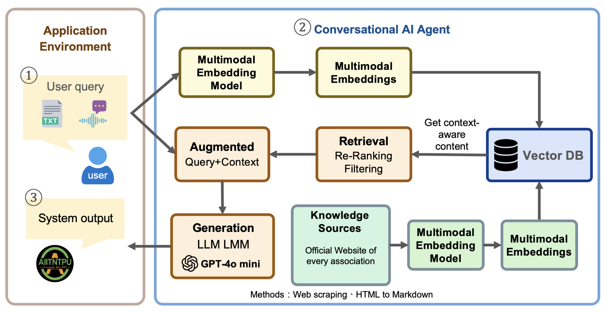

Mission: This NSTC-funded three-year project (2023–2026) builds AI-based inclusive communication assistive systems for speech-impaired individuals, across four sub-projects covering hardware, AI model development, multimodal dialogue systems, and field testing.
I work on Sub-project 3: a multimodal, cross-lingual, task-oriented dialogue system.
Embedded hardware and speech-signal assistive modules.
Adaptive AI communication models and user interfaces.
Multimodal, cross-lingual, task-oriented dialogue systems for inclusive communication.
Field testing, user validation, and technology dissemination.
As the lead research assistant for Sub-project 3, I'm the main point of contact between the research team and our 7 partner organizations, and I own the system end to end, from requirements through production.
AI-powered LINE bots deployed and live in production
Served between June 2024 and May 2026
Text, voice, and image input with cross-lingual responses, built and internally tested
In-depth interviews with 7 social welfare organizations to identify real-world requirements, plus diverse data sources including FAQs and conversation logs.
Used GPT-4o to generate comprehensive Q&A datasets and built multilingual knowledge bases tailored to each organization's needs.
Three-stage rollout: core validation with a LINE Bot, feature expansion with voice integration, then interface consolidation on the Gradio web platform.

The system runs on a RAG (Retrieval-Augmented Generation) framework: e5-base embeddings with a FAISS vector database for retrieval, and GPT-4o / Mistral for response generation with multilingual TTS output.
We work with 7 social welfare organizations to put these AI communication tools directly in front of the people who need them.
Advancing inclusive AI and multimodal communication systems as a research field.
Improving quality of life and communication access for speech-impaired individuals.
New approaches to multilingual, multimodal AI-assisted communication.
Groundwork for market-ready assistive communication technology.
Implementing an Inclusive Communication System with RAG-enhanced Multilingual and Multimodal Dialogue Capabilities
Cheng-Yun Wu, Bor-Jen Chen, Wen-Hsin Hsiao, Hsin-Ting Lu, Yue-Shan Chang, Chen-Yu Chiang, Chao-Yin Lin, Yu-An Lin, Min-Yuh Day
The project has been covered across print, digital, TV, and radio outlets:
Using AI to restore communication rights for people with speech disorders — inside NTPU's ReVoice project, featuring Prof. Yu-Shan Chang and Prof. Chao-Yin Lin
Read MoreUsing AI, National Taipei University strives to remove communication barriers
Read MoreHeld multiple recruitment info sessions and in-depth interviews with patients and caregivers, assessing how assistive technology improves quality of life.
Opening the Door of Silence: How AI is Transforming the Future of Communication for the Speech-Impaired
Read MoreNSTC Launches "Inclusive Technology" Initiative Focused on Digital Equality for Disadvantaged Groups
Read MoreSix people can no longer speak: 20 NTPU faculty and students "work hard on a non-profit project" to help AI speak for the speech-impaired
Read More[ReVoice Project Team] Sub-project 3 — Multimodal Cross-lingual Task-Oriented Dialogue System for Inclusive Communication Support
WatchAI Gives Voice Back to the Speech-Impaired: Professor and Disabled PhD Student Develop Real-Time Translation Software
Read MoreText-to-speech: bringing a lost voice back with warmth. Featuring Dr. Chen-Yu Chiang (NTPU) and social worker supervisor Ling-Chin Huang (MNDA)
Read MoreYou can bank your voice: how a voice bank helps ALS patients speak. Featuring Dr. Chen-Yu Chiang (NTPU) and social worker supervisor Ling-Chin Huang (MNDA)
Read MoreAssistive technology for speech-impaired communication, featuring Prof. Han-Hsun Huang (NTPU CSIE) and PI Prof. Yu-Shan Chang
Read MoreThirsty, needing the restroom, but no one understands: how NTPU students with disabilities helped build a system so conversation doesn't have to be guesswork
Read MoreA PhD student with a disability builds ezTalk, giving people with speech impairments a voice
Watch關於 Yun 的作品集，直接問我